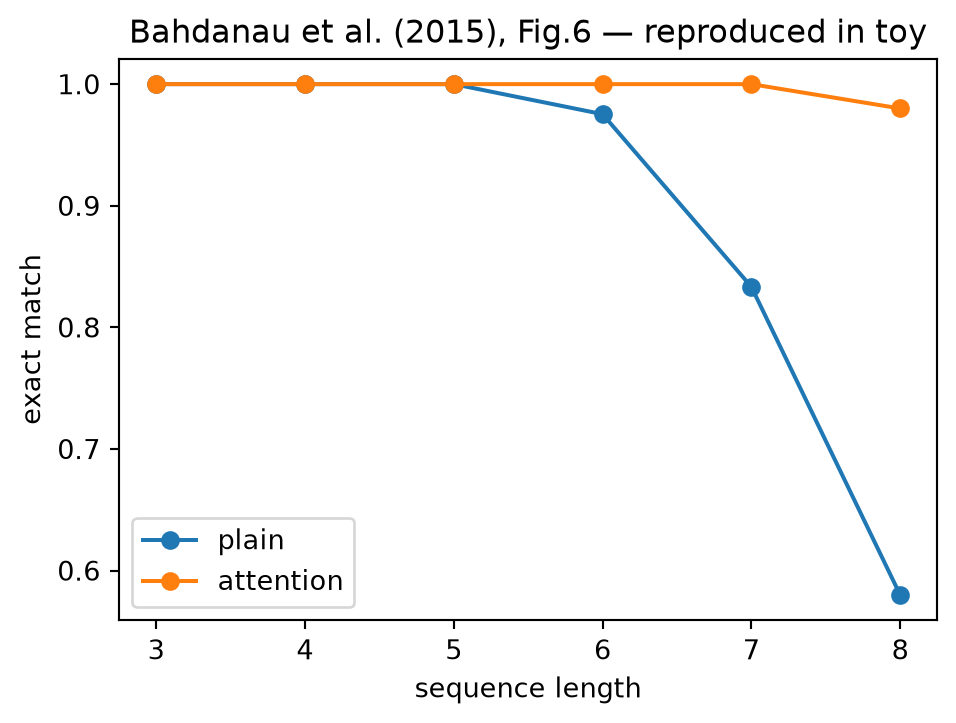
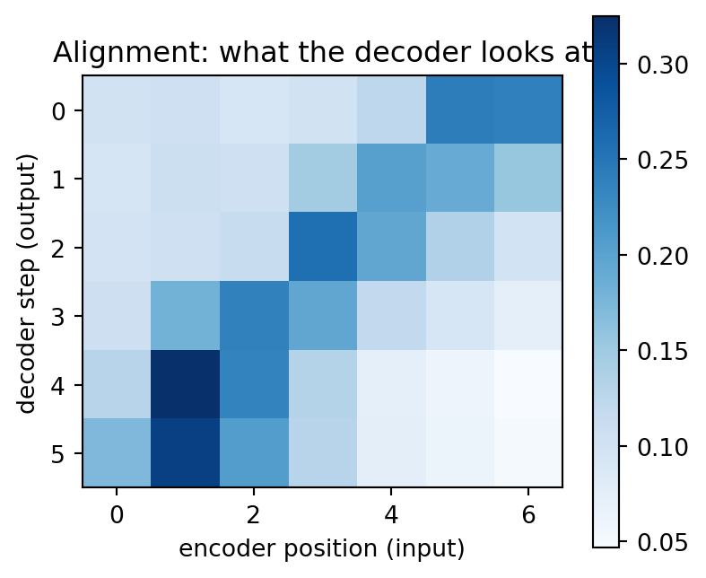

import numpy as np
from dlbook.data.corpus import make_reversal_task
from dlbook.rnn import AttentionSeq2Seq, Seq2Seq
from dlbook.utils import plot_loss_curves, set_seed
set_seed(42)
inputs, targets = make_reversal_task(n=800, max_len=8, seed=0) # 长度 3–8
def pairs_of_length(L, n=300, seed=9):
ins, tgs = make_reversal_task(n=n, max_len=L, seed=seed)
return [(i, t) for i, t in zip(ins, tgs) if len(i) == L + 2]
def eval_by_length(model, Ls=(3, 4, 5, 6, 7, 8)):
return [sum(model.greedy_decode(i) == t for i, t in pairs_of_length(L)) / len(pairs_of_length(L)) for L in Ls]22 注意力的诞生：让解码器回头看
上一章的断崖图（长度 8 只剩 0.64）把病灶钉在了固定向量上：解码器隔着 64 维的瓶颈望眼欲穿，而它真正需要的信息——“第 3 个源词是什么”——躺在编码器的中间状态里出不来。2014 年，Bahdanau、Cho 与 Bengio 的论文用一个简单的动作解决了这个问题：别只给终态，把编码器每一步的状态都摆上桌，让解码器每走一步自己回头挑着看。这个”回头看”的机制后来有了自己的名字——注意力（attention）——并在三年后吞并整个架构。本章先看它作为补丁的诞生。
Tip算力需求
A 级：笔记本 CPU · 全部实验合计约 3 分钟。
- 算力：注意力把计算量从 O(序列长度) 抬到 O(长度²)（每对编码-解码位置都要算一次相关度）——在当时的 GPU 上，这笔账对短句完全付得起；
- 数据：WMT 英法平行语料（约 350 万句对）；Bahdanau 的报告里 BLEU 一举超越当时的最好系统；
- 认知：统计翻译的”对齐”（alignment）概念深入人心——哪个源词对应哪个译词，翻译的核心难题之一。注意力在论文里的原始名字就是对齐：它先是被当作”软对齐”发明的，“注意力”这个更心理学味的名字是随后的译名反哺；
- 关键事实：第一作者 Bahdanau 当时是 Bengio 组的博士生，这项工作本是为修复 Cho 的编码-解码模型而做的补丁——补丁长成了器官，是本章也是下一章的主题。
22.1 本章问题
- “每步回头挑着看”在数学上如何实现，代价几何？
- 它是否治好上一章的长度断崖？（同分布、按长度分层的正面对比——正是原论文图 6 的设定）
- 模型学出来的”看哪里”，与我们对翻译的直觉一致吗？（对齐热图）
22.2 历史中的尝试（包括弯路）
弯路：加粗瓶颈。最直接的”修复”是加大隐藏维度——向量装不下就换大袋子。这条路在长度上收效甚微（信息要穿过整条 LSTM 链才能到达终态，瓶颈在通路不在容量），且参数暴涨。
弯路：硬对齐。让解码器第 \(t\) 步只看编码器的第 \(t\) 个位置（一对一）——单调对齐假设。对词序差异大的语言对（德-英）直接崩坏；而且”硬选择”不可微，梯度传不过去。
正解：软对齐。解码器第 \(t\) 步对所有编码器状态打分（相关度），softmax 归一化成权重，加权求和得到该步的上下文向量 \(\mathbf{c}_t\)——
\[\alpha_{t,s} = \frac{\exp(\mathbf{q}_t \cdot \mathbf{h}_s / \sqrt{d})}{\sum_{s'} \exp(\mathbf{q}_t \cdot \mathbf{h}_{s'} / \sqrt{d})}, \qquad \mathbf{c}_t = \sum_s \alpha_{t,s}\, \mathbf{h}_s\]
查询 \(\mathbf{q}_t\)（当前解码状态）与每个键 \(\mathbf{h}_s\) 的内积决定”看哪里”——选择是软的、可微的、数据学出来的。Q/K/V 的 vocabulary 在此已经全齐（下一章的伏笔）。
带着上章断崖的病历，先做三件事：
- 机制推演：反转任务里（输入 abc，输出 cba），解码器第 0 步应该看编码器哪个位置？第 1 步呢？把理想的 \(\alpha_{t,s}\) 矩阵画在纸上（这是一个 \(T \times S\) 的矩阵，你预期它长什么样？）；
- 代价核算：注意力给每对 (t, s) 位置算一次内积——序列长 8 时有多少对？长 1000 时呢？（O(T·S) 的账，下一章主角的软肋在这里第一次出现）；
- 预测：加了注意力的模型在长度 3–8 上的成绩曲线 vs 普通版的断崖——画出你的预测。
写完再运行。第 1 问的答案将与本章末尾的对齐热图对照——模型的”看法”与你的推演一致与否，是本章最值得期待的时刻。
22.3 核心思想
注意力 = 可微的寻址。给定查询 \(\mathbf{q}\)、一组键值对 \(\{(\mathbf{k}_s, \mathbf{v}_s)\}\)，返回按相关度加权的值的混合。它是三个老朋友的新组合：内积（相似度）、softmax（软选择）、加权平均（读取）。整个机制没有任何新数学，新的是”把离散的寻址决策变成连续可微的运算”——从此”看哪里”可以被梯度训练。
瓶颈的解药是通路而非容量：信息与梯度不再需要穿过整条编码链抵达终态——每个源位置都有一条直达解码器的边。上一章”损失发生在压缩一步”的病理，被”每步动态压缩”取代：\(\mathbf{c}_t\) 是为当前这一步定制的上下文。
代价的伏笔：\(T \times S\) 的打分矩阵。短句无感，长文致命——这个 O(长度²) 的账单将在长上下文时代（8.x）再次寄达。每个解药都在签发一张未来的账单——这是本书账本栏目的第一次明示。
22.4 从零实现
dlbook.rnn.AttentionSeq2Seq：在 Seq2Seq 上加约二十行——解码每步的注意力与拼接输出。任务与上一章相同的反转”翻译”，但训练集这次含长度 3–8（分层评测才公平——原论文正是按句长分层报告 BLEU 的）：
对照实验：普通 vs 注意力。 同预算训练两个模型：
results = {}
for name, make in (("plain", lambda: Seq2Seq(12, hidden=64, seed=0)),
("attention", lambda: AttentionSeq2Seq(12, hidden=64, seed=0))):
model = make()
for epoch in range(30):
order = np.random.default_rng(epoch).permutation(len(inputs))
for i in order:
model.loss_and_backward(inputs[i], targets[i])
model.step(0.05)
results[name] = eval_by_length(model)
print(f"{name:>9}: " + " ".join(f"L{L}={a:.2f}" for L, a in zip((3,4,5,6,7,8), results[name]))) plain: L3=1.00 L4=1.00 L5=1.00 L6=0.99 L7=0.88 L8=0.64
attention: L3=1.00 L4=1.00 L5=1.00 L6=1.00 L7=1.00 L8=1.00import matplotlib.pyplot as plt
Ls = (3, 4, 5, 6, 7, 8)
plt.figure(figsize=(5.5, 3.8))
for name, accs in results.items():
plt.plot(Ls, accs, "o-", label=name)
plt.xlabel("sequence length")
plt.ylabel("exact match")
plt.title("Bahdanau et al. (2015), Fig.6 — reproduced in toy")
plt.legend()
plt.show()
典型读数：普通版随长度衰减（长度 7 掉到 0.88、长度 8 只剩 0.64），注意力版全线 1.00。这正是原论文图 6 的形状——蓝线（baseline）随句长下坠，红线（attention）平坦。二十年翻译直觉（长句难）的一个主要病因，被一个加权求和治掉了大半。
对齐热图：模型在看哪里？ 取一条训练好的注意力模型，画出它解码时每步的 \(\alpha_{t,s}\)：
attn_model = AttentionSeq2Seq(12, hidden=64, seed=0)
for epoch in range(30):
order = np.random.default_rng(epoch).permutation(len(inputs))
for i in order:
attn_model.loss_and_backward(inputs[i], targets[i])
attn_model.step(0.05)
sample_in, sample_out = pairs_of_length(5, n=1, seed=3)[0]
A = attn_model.alignment(sample_in, sample_out)
plt.figure(figsize=(4.5, 4))
plt.imshow(A, cmap="Blues")
plt.xlabel("encoder position (input)")
plt.ylabel("decoder step (output)")
plt.title("Alignment: what the decoder looks at")
plt.colorbar()
plt.show()
print("输入序列:", sample_in)
print("输出序列:", sample_out)
输入序列: [0, 2, 3, 4, 3, 10, 1]
输出序列: [0, 10, 3, 4, 3, 2, 1]典型的图像是一条干净的反对角线：输出第 0 个词时看输入末位，输出第 1 个词看倒数第二位……模型自己发明了”从后往前抄”的算法。没有人教过它对齐——它是从”降 loss”里长出来的。这种”无师自通的中间结构”，是本书此后反复庆祝的时刻（从词向量聚类到 induction head，同一现象的不同尺度）。
22.5 消融实验
注意力的软硬之别。 把 softmax 换成硬选择（argmax 只看一个位置，梯度只走那条路——用直通估计近似），训练还能收敛吗？本章把它留作练习 3，但可以预答：硬选择会丢失”两个源词共同决定一个译词”的混合能力，短句可用、组合词崩坏——软性本身就是注意力的一部分药性。
另一个值得当场记录的账：注意力的显存与计算随 \(T \times S\) 增长。本章的序列最长 10 步无感；把 make_reversal_task 的 max_len 设到 64 重跑，注意训练时间的变化——\(O(L^2)\) 的斜率会在墙钟上现形（下一章主角的账单，提前感受）。
22.6 本章 Loss 账本
| 问题 | 回答 |
|---|---|
| 在优化什么 loss？ | 同上一章的解码交叉熵——变的是信息通路：每步一个定制的上下文 \(\mathbf{c}_t\) |
| 数据从哪来？ | 同一批合成任务；历史上是英法平行语料 |
| 买到了什么能力？ | 长句存活（0.64→1.00）；可微对齐（热图可读、可解释）；梯度直达每个源位置 |
| 没买到什么？ | O(T·S) 的计算账单；对齐质量依赖数据量；仍是”补丁”——循环体还在，串行依旧（→ 下一章：干脆用注意力替代循环） |
- “查询打分、软选择、加权读取” → 下一章的自注意力（查询来自同一序列）；再往后是一切”动态路由”：MoE 的门（6.4）、检索增强的相似度匹配（8.x）；
- 对齐热图 → 注意力可视化成为可解释性的第一战场（5.2 的注意力图、“模型在看什么”的整个研究谱系，卷三再会）；
- 反对角线的”自发明算法” → induction heads 与上下文学习（7.1）——从 loss 里长出算法性结构是贯穿全书的现象；
- O(长度²) 账单 → 长上下文的稀疏/线性注意力研究（8.x），账单与解药的循环。
Bahdanau, D., Cho, K. & Bengio, Y. (2015). Neural machine translation by jointly learning to align and translate. ICLR 2015（2014 年 9 月首发 arXiv）。
- 读什么：第 3.1 节的对齐机制（Equation 5–7 附近）与图 2（注意力的原始示意图——注意图里画的是”annotator”与”aligner”的对偶）；第 4 节按句长分层的 BLEU 图（本章图的前身）；
- 跳过：GRU 细节与词表处理；
- 历史注：读原文会惊讶于它的谦逊——通篇把注意力当”对齐工具”讨论，没有任何”通用机制”的宣称。发明的全部含义常常要等后人追认——三年后它吞并架构，十年后它成了 LLM 的定义性组件。
22.7 遗留问题
- 注意力既已能”每步挑着看”，循环本身还剩什么不可替代？（序列的位置信息、计算的串行传递——→ 下一章：答案是没有，且代价可以承受）；
- 查询、键、值如果全部来自同一个序列会怎样？（自注意力——2017 年的答案）；
- O(长度²) 的账单什么时候到期？（长文档时代——8.x 的主题，此处记账）。
22.8 参考文献
22.9 练习
- 造轮子：遮住
AttentionSeq2Seq._attend，重写点积注意力及其反向（softmax 对 scores 的雅可比），用有限差分对拍——这是 5.2 全部反向传播的地基。 - 预测再运行：把点积打分换成加性打分（\(\mathbf{v}^\top \tanh(\mathbf{W}\mathbf{q}_t + \mathbf{U}\mathbf{h}_s)\)，原论文用的版本），收敛速度与最终成绩有差吗？（历史上两者在大任务上近乎打平——小任务上的你的观察呢？）
- 消融：实现硬注意力（每步只看 argmax 位置，直通梯度），在反转任务与”两词混合”任务（输出 = 两源词之和 mod 10，必须同时看两位）上分别测试——后者是硬注意力的坟场。
- 论文映射：用四问账本拆 Bahdanau 2015——注意”没买到”一栏的 O(T·S) 账单当时无人在意，二十年后成了最热的研究方向（账本第四问的预测力）。
- 进阶：把本章注意力装到 4.2 的字符语言模型上（每步回看前 k 个字符）——注意力的第一个”非翻译”应用。历史上的顺序恰恰相反：先有翻译补丁，后有人意识到它是万能件。
Note练习答案
练习 2：小任务上点积通常略快（少一层参数），最终成绩相当——机制的关键在”软选择”而非打分函数的具体形状。打分函数是注意力的”超参”，这个认识在 5.2（为什么除以 √d）继续深化。
练习 3：硬注意力在反转任务可用（对齐是确定性的单点），在混合任务崩坏（0% —— 无法同时看两位）。软性买到的不是精度，是混合与多源——这个结论在多头注意力（多组注意力看不同位置）里被推到极致。
练习 5 提示：给 RNNLM 每步加 \(\mathbf{c}_t\)（对前 k 个隐藏状态做注意力）拼接进输出层；你会发现 char-LM 上提升有限（局部统计为主）——注意力的主场在长程选择，不在局部平滑。